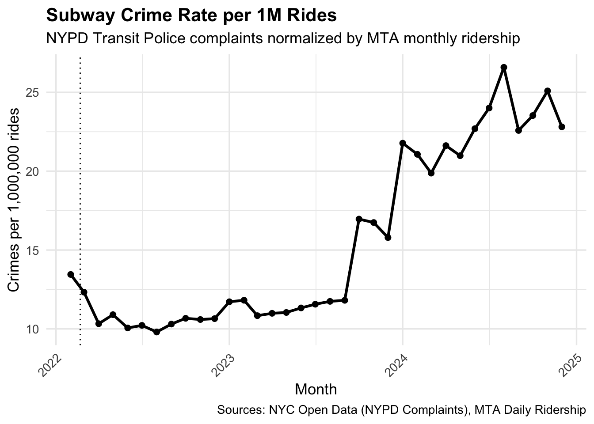
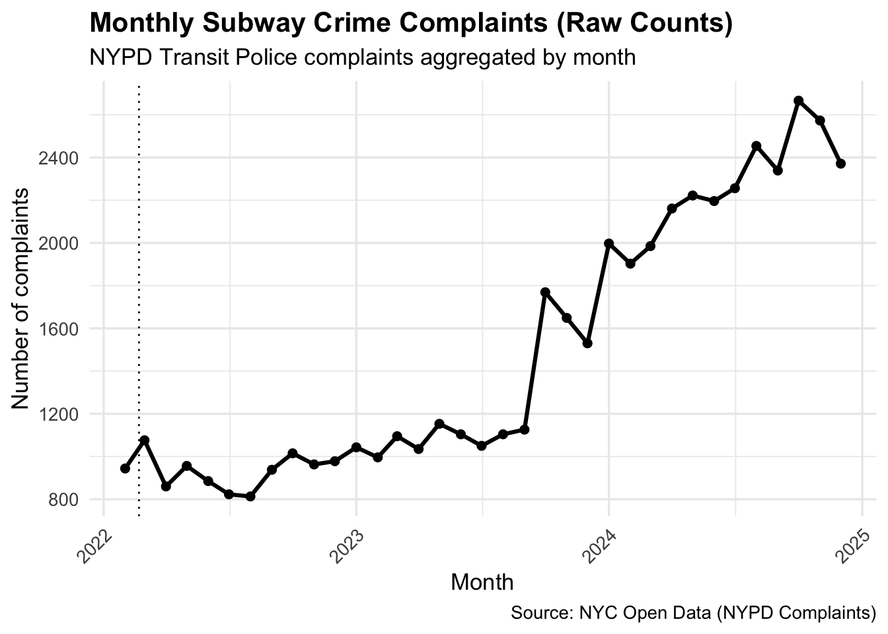
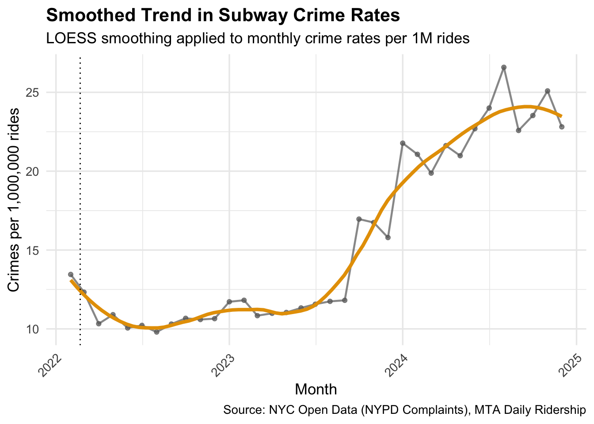

Show code
# ---- Setup ----
library(tidyverse)
library(lubridate)
library(scales)Specific Question: Has subway crime increased or decreased over time?
Xiaolin Wu
This analysis addresses the specific question: Has subway crime increased or decreased over time in New York City? Understanding long-term trends in subway crime is critical for evaluating public safety conditions and informing policy decisions related to transit policing and resource allocation.
Raw crime counts alone can be misleading because subway usage fluctuates substantially over time, particularly during major disruptions such as the COVID-19 pandemic. To address this issue, this analysis examines crime rates normalized by monthly subway ridership, allowing for more meaningful comparisons across periods with different levels of transit activity.
By focusing on reported complaints handled by the NYPD Transit Bureau, this study aims to capture trends most directly relevant to subway environments. The resulting analysis provides context for evaluating whether observed changes in crime reflect shifts in rider behavior, enforcement strategies, or broader social conditions.
Why Ridership-Normalized Crime Measures Matter
Evaluating subway crime over time requires careful consideration of how crime is measured. Raw counts of reported incidents provide information about volume, but they do not capture changes in risk experienced by individual riders. This limitation becomes especially important when transit usage fluctuates sharply, as occurred during and after the COVID-19 pandemic.
Following 2020, subway ridership in New York City declined dramatically and then recovered unevenly across subsequent years. During this period, a stable number of reported crimes could imply rising risk per trip, while increasing complaint counts might still correspond to lower per-rider exposure. Without accounting for ridership levels, it is difficult to determine whether observed changes reflect shifts in safety conditions or changes in passenger volume.
Normalizing crime counts by ridership addresses this challenge by reframing crime as a rate rather than a total. A rate-based approach allows trends to be interpreted in terms of individual exposure to risk rather than aggregate system activity. This distinction is particularly relevant for policy evaluation, as safety interventions aim to reduce risk per rider rather than simply reduce total complaints.
For these reasons, this analysis focuses on crime rates expressed per one million subway rides. By doing so, the specific question of whether subway crime has increased or decreased over time can be evaluated in a manner that aligns more closely with rider experience and public safety concerns.
Subway crime incidents were measured using the NYPD Complaint Data provided through NYC Open Data. This dataset contains individual complaint records reported to the NYPD, including information on jurisdiction, report date, and complaint identifiers.
This analysis focuses specifically on complaints handled by the NYPD Transit Bureau, identified using the jurisdiction descriptor (JURIS_DESC = "N.Y. TRANSIT POLICE"), as a proxy for subway-related crime. Complaint records from 2022 through 2024 were obtained from the historic extract, while 2025 year-to-date data were obtained from a separate current-year dataset.
Key fields used from this dataset include the complaint identifier (CMPLNT_NUM), report date (RPT_DT), and jurisdiction descriptor (JURIS_DESC).
Subway ridership data were obtained from the MTA Daily Ridership dataset published by New York State. This dataset provides daily estimates of subway usage across the MTA system.
Daily ridership values were aggregated to the monthly level to align with the temporal resolution of the complaint data. The primary field used for normalization was Subways: Total Estimated Ridership, which captures total daily subway usage across all lines.
Ridership data spanning the same time period as the complaint data were used to ensure consistent temporal coverage.
Although NYPD complaint data provide the most comprehensive public record of reported crime, these data represent reported incidents rather than true underlying crime rates. Reporting behavior may vary over time in response to changes in public awareness, policing practices, or social conditions. As a result, observed trends in complaints may reflect shifts in reporting as well as changes in criminal activity.
Transit Bureau complaints are used in this analysis as a proxy for subway-related crime. This classification captures incidents handled within the subway system but does not distinguish between crime types or severity. Minor offenses and serious incidents are treated equivalently in the aggregate count, which may mask variation in the nature of reported crime over time.
Ridership data introduce additional sources of uncertainty. MTA ridership figures are estimates rather than precise counts and may be revised as additional information becomes available. Measurement error in ridership affects the denominator of the crime rate and can influence rate estimates, particularly in periods with unusually low or volatile subway usage.
Despite these limitations, combining complaint data with ridership estimates provides a more informative measure of safety conditions than raw counts alone. Interpreting the results requires recognizing that crime rates reflect reported incidents per ride rather than definitive measures of criminal behavior.
crime_fp_hist <- "../../MTA_crime_trend/data/raw/NYPD_Complaint_Data_Historic_small.csv"
crime_fp_2025 <- "../../MTA_crime_trend/data/raw/NYPD_Complaints_2025.csv"
crime_hist <- read_csv(
crime_fp_hist,
show_col_types = FALSE,
col_types = cols(
CMPLNT_NUM = col_character(),
.default = col_guess()
)
)
crime_2025 <- read_csv(
crime_fp_2025,
show_col_types = FALSE,
col_types = cols(
CMPLNT_NUM = col_character(),
.default = col_guess()
)
)
# Fix type mismatch before binding
crime_hist <- crime_hist %>% mutate(HOUSING_PSA = as.character(HOUSING_PSA))
crime_2025 <- crime_2025 %>% mutate(HOUSING_PSA = as.character(HOUSING_PSA))
crime_raw <- bind_rows(crime_hist, crime_2025)
rides_fp <- "../../MTA_crime_trend/data/raw/MTA_Ridership_Daily.csv"
rides_raw <- read_csv(rides_fp, show_col_types = FALSE)
# Quick checks
glimpse(crime_raw)Rows: 2,086,950
Columns: 36
$ CMPLNT_NUM <chr> "298701012", "298695144", "298697844", "298…
$ CMPLNT_FR_DT <chr> "03/13/2022", "01/01/2022", "03/17/2022", "…
$ CMPLNT_FR_TM <time> 00:01:00, 08:00:00, 19:26:00, 17:00:00, 21…
$ CMPLNT_TO_DT <chr> "04/30/2022", NA, "12/31/2024", "12/21/2022…
$ CMPLNT_TO_TM <chr> "23:59:00", "(null)", "13:07:00", "17:00:00…
$ ADDR_PCT_CD <dbl> 113, 44, 17, 43, 121, 104, 115, 43, 88, 14,…
$ RPT_DT <chr> "12/31/2024", "12/31/2024", "12/31/2024", "…
$ KY_CD <dbl> 116, 233, 578, 113, 341, 101, 343, 578, 344…
$ OFNS_DESC <chr> "SEX CRIMES", "SEX CRIMES", "HARRASSMENT 2"…
$ PD_CD <dbl> 177, 175, 638, 729, 349, NA, 478, 638, 101,…
$ PD_DESC <chr> "SEXUAL ABUSE", "SEXUAL ABUSE 3,2", "HARASS…
$ CRM_ATPT_CPTD_CD <chr> "COMPLETED", "COMPLETED", "COMPLETED", "COM…
$ LAW_CAT_CD <chr> "FELONY", "MISDEMEANOR", "VIOLATION", "FELO…
$ BORO_NM <chr> "QUEENS", "BRONX", "MANHATTAN", "BRONX", "S…
$ LOC_OF_OCCUR_DESC <chr> "INSIDE", "INSIDE", "INSIDE", "INSIDE", "FR…
$ PREM_TYP_DESC <chr> "RESIDENCE-HOUSE", "RESIDENCE - APT. HOUSE"…
$ JURIS_DESC <chr> "N.Y. POLICE DEPT", "N.Y. POLICE DEPT", "N.…
$ JURISDICTION_CODE <dbl> 0, 0, 0, 0, 0, 0, 1, 0, 0, 1, 0, 0, 0, 2, 2…
$ PARKS_NM <chr> "(null)", "(null)", "(null)", "(null)", "(n…
$ HADEVELOPT <chr> "(null)", "(null)", "(null)", "(null)", "(n…
$ HOUSING_PSA <chr> NA, NA, NA, NA, NA, NA, NA, NA, NA, NA, NA,…
$ X_COORD_CD <dbl> 1046315, 1006490, 991006, 1017862, 939223, …
$ Y_COORD_CD <dbl> 187088, 244533, 211486, 241678, 160902, 204…
$ SUSP_AGE_GROUP <chr> "25-44", "45-64", "25-44", "UNKNOWN", "UNKN…
$ SUSP_RACE <chr> "BLACK", "BLACK", "ASIAN / PACIFIC ISLANDER…
$ SUSP_SEX <chr> "M", "M", "M", "U", "U", "(null)", "M", "M"…
$ TRANSIT_DISTRICT <dbl> NA, NA, NA, NA, NA, NA, 20, NA, NA, 4, NA, …
$ Latitude <dbl> 40.67998, 40.83784, 40.74716, 40.82997, 40.…
$ Longitude <dbl> -73.77623, -73.91963, -73.97562, -73.87854,…
$ Lat_Lon <chr> "(40.6799807384666, -73.7762339071953)", "(…
$ PATROL_BORO <chr> "PATROL BORO QUEENS SOUTH", "PATROL BORO BR…
$ STATION_NAME <chr> "(null)", "(null)", "(null)", "(null)", "(n…
$ VIC_AGE_GROUP <chr> "<18", "<18", "25-44", "45-64", "45-64", "<…
$ VIC_RACE <chr> "BLACK", "BLACK", "WHITE", "BLACK HISPANIC"…
$ VIC_SEX <chr> "M", "F", "F", "F", "F", "M", "D", "F", "F"…
$ `New Georeferenced Column` <chr> NA, NA, NA, NA, NA, NA, NA, NA, NA, NA, NA,…Rows: 1,776
Columns: 15
$ Date <chr> "03/01/2020"…
$ `Subways: Total Estimated Ridership` <dbl> 2212965, 532…
$ `Subways: % of Comparable Pre-Pandemic Day` <chr> "97%", "96%"…
$ `Buses: Total Estimated Ridership` <dbl> 984908, 2209…
$ `Buses: % of Comparable Pre-Pandemic Day` <chr> "99%", "99%"…
$ `LIRR: Total Estimated Ridership` <dbl> 86790, 32156…
$ `LIRR: % of Comparable Pre-Pandemic Day` <chr> "100%", "103…
$ `Metro-North: Total Estimated Ridership` <dbl> 55825, 18070…
$ `Metro-North: % of Comparable Pre-Pandemic Day` <chr> "59%", "66%"…
$ `Access-A-Ride: Total Scheduled Trips` <dbl> 19922, 30338…
$ `Access-A-Ride: % of Comparable Pre-Pandemic Day` <chr> "113%", "102…
$ `Bridges and Tunnels: Total Traffic` <dbl> 786960, 8746…
$ `Bridges and Tunnels: % of Comparable Pre-Pandemic Day` <chr> "98%", "95%"…
$ `Staten Island Railway: Total Estimated Ridership` <dbl> 1636, 17140,…
$ `Staten Island Railway: % of Comparable Pre-Pandemic Day` <chr> "52%", "107%…When combining historic and 2025 complaint extracts, several identifier fields were stored with inconsistent types across files (e.g., HOUSING_PSA). These columns were coerced to a common type prior to row-binding to ensure consistent ingestion.
The analysis proceeds in several stages to assess changes in subway crime over time.
First, NYPD complaint records were filtered to include only incidents handled by the Transit Bureau, isolating complaints most directly associated with subway environments. Report dates were parsed and converted to a monthly time scale to support temporal aggregation.
Second, complaint counts were aggregated by month to produce a monthly measure of reported subway crime. In parallel, MTA daily ridership data were aggregated to monthly totals to ensure alignment with the crime data.
Third, monthly crime rates were computed by normalizing complaint counts by total monthly subway ridership, expressed as crimes per one million rides. This normalization allows for meaningful comparisons across periods with substantially different levels of subway usage.
Finally, time-series visualizations were generated to examine trends in both raw complaint counts and normalized crime rates. Key policy and contextual markers, including the onset of the COVID-19 pandemic and the implementation of the 2022 Subway Safety Plan, were overlaid to aid interpretation.
This section presents the main empirical findings related to the specific question of whether subway crime has increased or decreased over time. Results are shown using both normalized crime rates and raw complaint counts to distinguish changes in reported crime from changes driven by ridership levels.
crime_subway <- crime_raw %>%
filter(JURIS_DESC == "N.Y. TRANSIT POLICE") %>%
mutate(
date = mdy(RPT_DT),
year_month = floor_date(date, "month")
) %>%
group_by(year_month) %>%
summarise(total_crimes = n(), .groups = "drop")
rides <- rides_raw %>%
mutate(
date = mdy(Date),
year_month = floor_date(date, "month")
) %>%
group_by(year_month) %>%
summarise(
subway_rides = sum(`Subways: Total Estimated Ridership`, na.rm = TRUE),
.groups = "drop"
)
trend <- left_join(rides, crime_subway, by = "year_month") %>%
mutate(
total_crimes = replace_na(total_crimes, 0),
crimes_per_million = (total_crimes / subway_rides) * 1e6
)
# ---- Remove incomplete months (very low ridership can inflate rates) ----
trend_clean <- trend %>%
filter(!is.na(subway_rides) & subway_rides > 0) %>%
filter(year_month >= as.Date("2022-01-01")) %>%
filter(subway_rides >= quantile(subway_rides, 0.05, na.rm = TRUE))
p_rate <- ggplot(trend_clean, aes(x = year_month, y = crimes_per_million)) +
geom_line(linewidth = 1.1) +
geom_point(size = 2) +
geom_vline(xintercept = as.Date("2020-03-15"), linetype = "dashed") +
geom_vline(xintercept = as.Date("2022-02-21"), linetype = "dotted") +
labs(
title = "Subway Crime Rate per 1M Rides",
subtitle = "NYPD Transit Police complaints normalized by MTA monthly ridership",
x = "Month",
y = "Crimes per 1,000,000 rides",
caption = "Sources: NYC Open Data (NYPD Complaints), MTA Daily Ridership"
) +
theme_minimal(base_size = 13) +
theme(axis.text.x = element_text(angle = 45, hjust = 1),
plot.title = element_text(face = "bold"))
p_rate
After normalizing by ridership, the subway crime rate shows a gradual upward trend from 2022 through 2024. This suggests that changes in ridership volumes alone do not fully explain the observed pattern. Importantly, the final incomplete reporting month(s) were excluded to avoid artificially inflated rates caused by partial ridership totals.
p_count <- ggplot(trend_clean, aes(x = year_month, y = total_crimes)) +
geom_line(linewidth = 1.1) +
geom_point(size = 2) +
geom_vline(xintercept = as.Date("2020-03-15"), linetype = "dashed") +
geom_vline(xintercept = as.Date("2022-02-21"), linetype = "dotted") +
labs(
title = "Monthly Subway Crime Complaints (Raw Counts)",
subtitle = "NYPD Transit Police complaints aggregated by month",
x = "Month",
y = "Number of complaints",
caption = "Source: NYC Open Data (NYPD Complaints)"
) +
theme_minimal(base_size = 13) +
theme(axis.text.x = element_text(angle = 45, hjust = 1),
plot.title = element_text(face = "bold"))
p_count
Monthly complaint counts also increase over the same period, though the magnitude of change is smaller than the rate-based trend. Together, these visuals indicate that both higher complaint volumes and ridership dynamics contribute to the overall pattern, reinforcing the value of presenting both counts and normalized rates.
p_smooth <- ggplot(trend_clean, aes(x = year_month, y = crimes_per_million)) +
geom_line(color = "gray40", linewidth = 0.8, alpha = 0.7) +
geom_point(color = "gray40", size = 1.5, alpha = 0.7) +
geom_smooth(
method = "loess",
span = 0.4,
se = FALSE,
color = "#E69F00",
linewidth = 1.4
) +
geom_vline(xintercept = as.Date("2022-02-21"), linetype = "dotted") +
labs(
title = "Smoothed Trend in Subway Crime Rates",
subtitle = "LOESS smoothing applied to monthly crime rates per 1M rides",
x = "Month",
y = "Crimes per 1,000,000 rides",
caption = "Source: NYC Open Data (NYPD Complaints), MTA Daily Ridership"
) +
theme_minimal(base_size = 13) +
theme(
axis.text.x = element_text(angle = 45, hjust = 1),
plot.title = element_text(face = "bold")
)
p_smooth
To reduce the influence of month-to-month volatility, a smoothed trend was estimated using LOESS. The smoothed curve reinforces the pattern observed in the raw rate series, indicating a sustained upward trajectory in subway crime rates beginning in late 2023. This visualization is intended as a complementary view and does not replace the primary rate and count-based analyses.
The observed increase in subway crime rates after late 2023 raises important interpretive questions. An increase in reported crime per rider may reflect changes in underlying safety conditions, but it may also be influenced by shifts in rider behavior or enforcement practices. Distinguishing among these explanations requires caution.
One possible interpretation is that the post-2023 increase reflects a genuine deterioration in safety conditions experienced by riders. This interpretation is supported by the persistence of the trend after normalizing for ridership. If rising crime rates were driven primarily by increased subway usage, normalization would be expected to attenuate the observed increase.
Alternative explanations remain plausible. Changes in policing intensity or reporting practices could increase the number of recorded complaints without a corresponding increase in actual crime. Shifts in the composition of riders, such as changes in trip purpose or travel times, may also influence exposure to risk.
For these reasons, the results should be interpreted as descriptive rather than causal. The analysis identifies a sustained increase in reported crime risk per trip but does not attribute this change to specific mechanisms. Additional data would be required to isolate the drivers of the observed trend.
Several limitations should be considered when interpreting the results of this analysis.
First, the analysis relies on reported NYPD complaint data, which may not fully capture the true incidence of crime on the subway system. Changes in reporting behavior, enforcement practices, or public willingness to file complaints over time could influence observed trends independently of underlying crime levels.
Second, while normalizing complaint counts by ridership helps account for large fluctuations in subway usage, ridership estimates themselves are subject to uncertainty. In particular, the most recent months of 2025 reflect year-to-date data and may be incomplete at the time of reporting. To mitigate the influence of artificially inflated rates caused by partial ridership totals, months with unusually low ridership values were excluded from the primary analysis.
Third, this analysis aggregates crime incidents at the system-wide monthly level and does not account for variation across stations, boroughs, or time of day. As a result, localized trends or short-term fluctuations may be obscured by aggregation.
Finally, the analysis is descriptive and does not attempt to establish causal relationships between policy interventions and observed changes in crime. While key contextual markers are included for interpretive purposes, additional data and methodological approaches would be required to rigorously assess causal impacts.
Several alternative explanations may contribute to the observed increase in subway crime rates. Reporting behavior may have changed over time as public concern about subway safety increased. Heightened attention to crime could lead to higher reporting rates even if underlying criminal activity remained constant.
Changes in enforcement practices may also influence complaint data. Increased police presence or targeted enforcement campaigns could raise the likelihood that incidents are recorded as official complaints. Conversely, periods of reduced enforcement may suppress reported crime without improving actual safety.
The composition of subway ridership may further affect observed rates. Riders returning to the system after the pandemic may differ systematically from pre-pandemic riders in terms of travel patterns or exposure to risk. These compositional changes are not captured in aggregate ridership counts.
While these factors complicate interpretation, the consistency of the rate-based increase across multiple months supports the conclusion that the observed pattern is not driven by a single anomalous period. Future analyses incorporating spatial detail, crime type, or enforcement data could further assess the robustness of these findings.
This analysis examined whether subway crime has increased or decreased over time by combining NYPD Transit Bureau complaint data with MTA ridership statistics. The results indicate that both raw complaint counts and crime rates normalized by ridership increased from 2022 through 2024, suggesting that rising crime rates cannot be explained solely by changes in subway usage.
While short-term fluctuations are evident, the overall pattern points to a sustained upward trend beginning in late 2023 and continuing through much of 2024. The consistency between raw counts and normalized rates strengthens confidence in this finding and indicates that changes in reported subway crime reflect more than shifts in passenger volume alone.
From a broader perspective, these findings highlight the importance of using rate-based measures when evaluating transit safety. Analyses that rely exclusively on raw counts risk conflating changes in ridership with changes in risk experienced by individual riders. By focusing on crime per trip, this study provides a clearer lens through which system-wide safety conditions can be assessed over time.
Future work could extend this analysis by incorporating spatial information to examine station-level or borough-level variation in subway crime trends. Additional disaggregation by crime type or time of day may help identify specific drivers of the observed increase. Finally, integrating external contextual data—such as staffing levels, service changes, or socioeconomic indicators—could support more rigorous evaluation of policy interventions aimed at improving subway safety and reducing crime risk for riders.